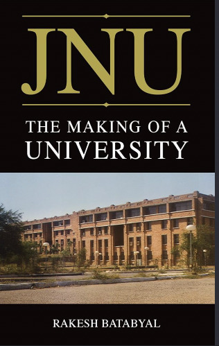
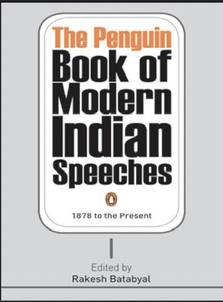

Dr. Rakesh Batabyal
Historian of Modern and Contemporary Times
Dr. Rakesh Batabyal is widely recognized in academic circles as a perceptive historian, media critic, and prominent Indian public intellectual. Born on December 15, 1966, his extensive body of research addresses modern South Asian political history, media institutions, and institutional development.
Scholars and cultural commentators frequently highlight his ability to examine the ongoing tensions between technological acceleration and human well-being. Through detailed archival research and sharp cultural analysis, his works reassess established ideas surrounding national identity, political discourse, and collective memory.
In his position as Associate Professor at the Centre for Media Studies within Jawaharlal Nehru University, New Delhi, he contributes significantly to discussions on media ethics, historical interpretation, and democratic institutions.
Appointments & Fellowships
Associate Professor
Centre for Media Studies, School of Social Sciences, JNU, New Delhi
Associate Professor & Deputy Director
Academic Staff College, Jawaharlal Nehru University
Visiting Professor
Graduate Institute of Information Studies, University of Tokyo, Japan
Postdoctoral Fellow
Indian Institute of Advanced Study (IIAS), Rashtrapati Nivas, Shimla
Education & Specializations
Jawaharlal Nehru University
M.Phil. & Ph.D.
Modern and Contemporary History
University of Vienna
RESET Fellow
Eastern & Central European Studies
University of Bucharest
Language Diploma
Romanian Language & Cultural History
Books & Publications
Idea of Order: Perspectives from Central and Eastern Europe (1989–2022)
Examines political transformations across Central and Eastern Europe following the end of the socialist era.
Communalism in Bengal: From Famine to Partition (1932–1947)
A detailed archival study of political mobilization and social realignments leading to the partition of Bengal.

JNU: The Making of a University
A history documenting the institutional design, academic ideals, and public role of Jawaharlal Nehru University.

The Penguin Book of Modern Indian Speeches
An anthology of oratorical history mapping key political debates and public discourses in modern India.
The Modern School: A History
Explores pedagogical developments, modern institution building, and educational philosophy.
Selected Research Papers & Articles
Countering Hegemony: The Polish Solidarity Movement in the Memory of Indians
Published by the Institute of National Remembrance. Examines Cold War memory and cross-cultural solidarity.
The Imperial Embers and the Invocation to Cold War: Colombo Conference 1950
Published in Proceedings of the Indian History Congress. Analyzes post-colonial Asian diplomatic alignments.
The Spoils of Partition: Bengal and India, 1947–1967
Published in Studies in History (Sage). Reviews the socio-political consequences of Bengal's partition.
Camera-e Dhorechen Manusher Swadhinata (Satyajit Ray & Moral Vision)
Published in Aparajito Satyajit. Explores moral vision and human agency in Indian cinema.